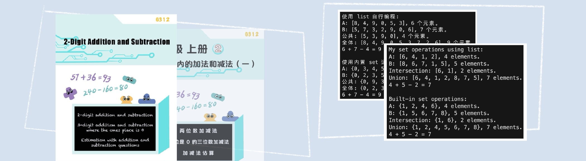
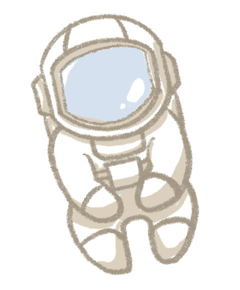
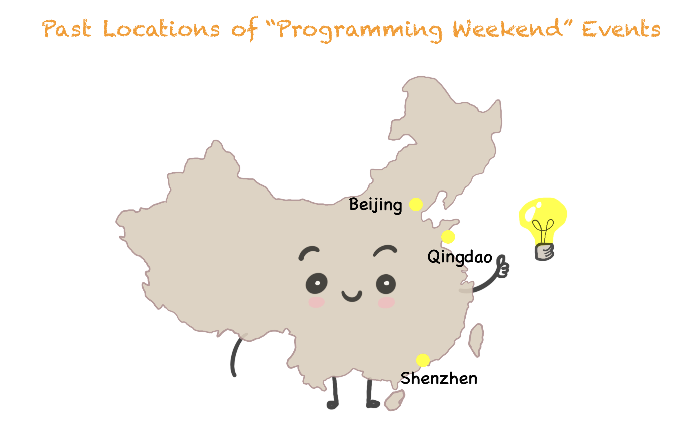

In 2022, my parents entrusted me to help my younger brother learn elementary school mathematics. At the time, he was six years old, and I was a freshman in high school. To tackle this project, I formulated a plan - after he completed each unit in his math textbook, I would design and assign him 1-2 coding exercises, written in Python, that closely relate to the unit's content. Using this approach combining mathematics and programming, we managed to complete an average of one semester's worth of coursework every two months. In about a year, we had finished the Chinese elementary mathematics curriculum from grades three to five.
The project library contains 60 Python programs that we wrote during the year, including 22 with graphical user interfaces and 38 with command line interfaces. These programs cover all 49 units from the third- to fifth-grade Chinese mathematics textbooks of the People's Education Press. The math_coding_handbook.pdf file contains the main mathematical topics for each unit and descriptions of the corresponding programs(s). We have also included detailed documentation and comments within all programs.
All programs and the handbook have separate versions in English and Chinese. The English version has with all graphical displays and program comments in English and the Chinese version has all graphical displays and program comments in Chinese.
Through this project, my brother and I have proven in practice that learning elementary math with coding allows learners to efficiently and effectively study mathematics while simultaneously becoming proficient in a programming language.
To effectively learn elementary school math with coding through this project requires the following:
There are two ways to use this project:
In 2022, when my younger brother Henry was six years old, my parents asked me to take charge of his mathematics and English education temporarily. At the time, I was ten years older than him and in my first year of high school. The initial goal we agreed upon was that, before I went to college, I would help him complete elementary school math and reach a level of English proficiency where he could continue to improve independently. Since I was the best in the family at English, there weren't many uncertainties about that, but how would I go about teaching him math?
I completed elementary school mathematics when I was nine years old. Looking back, I remember reading many textbooks, doing lots of practice problems, and taking quite a few mock tests. After some consideration, I realized Henry, who was only six, needed a different approach. Based on my learning experience, when someone constantly struggles with a particular type of math problem, it's usually because they lack a deep understanding of the underlying concepts. The purpose of doing practice problems should be to identify and address these weaknesses. However, If one does practice problems mindlessly, the same mistakes will appear again and again. This is why doing a sea of practice problems is often not an efficient way to learn new math topics. Therefore, I aimed to find an approach that would allow Henry to thoroughly understand any math concepts and skills he needs to learn before diving into extensive problem-solving.
The primary inspiration for combining math and coding came from taking high-level math courses as part of a machine learning research project. While taking the courses, I found that using programming tools to assist in learning mathematics at the university level was quite common and highly effective. When learning calculus, linear algebra, and statistics, programming was used to conduct mathematical experiments and solve practical problems. Coupled with the visualization of results, this greatly aided my understanding of abstract mathematical concepts and theorems. Later, I also found a few resources for learning middle school mathematics with the help of programming. However, I never found anything that combined elementary school mathematics with programming.
So, after discussing my idea with Henry, the "Learn Elementary School Math with Coding" project was born.
In addition to the year-long math coding project with Henry, we organized several programming weekend events, in which I led 5-10 children to learn mathematics with programming. Because these events were quite successful, I believe this project can benefit more children - allowing them to learn math efficiently with improved learning outcomes while equipping them with programming skills.
For children following the school curriculum, we hope this project can help them enhance their math and programming abilities. We also hope this project allows those who wish to accelerate their math learning, like Henry, to do so. One benefit of accelerated learning is that knowledge of fundamental mathematics can facilitate early interest development. For example, Henry's mathematic abilities greatly aided his music learning, allowing his musical interest and talent to develop early.
I hope this project can provide people with a new approach to learning mathematics and bring more opportunities to those who choose to use it. If you have any questions or suggestions about the project, feel free to contact me by this email: math-coding@hotmail.com.